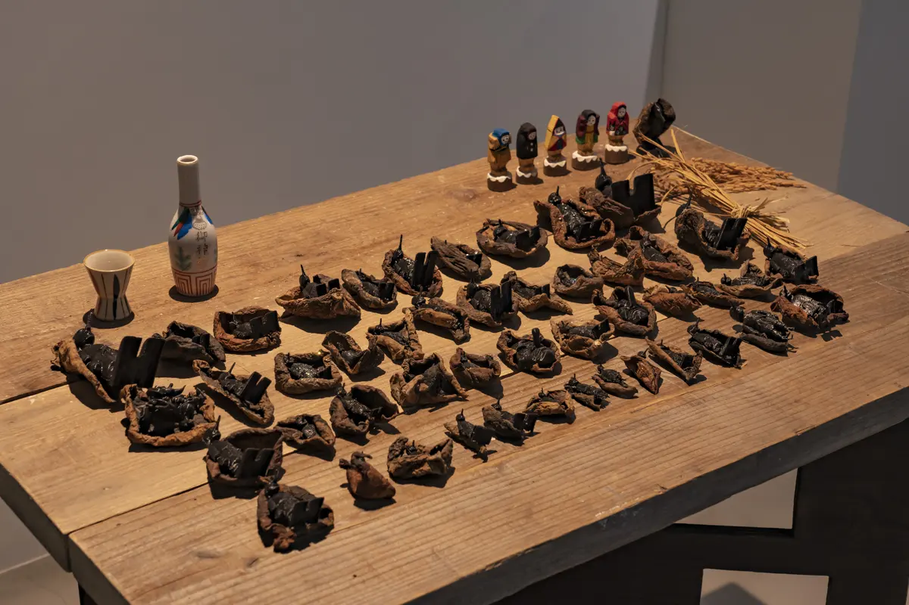
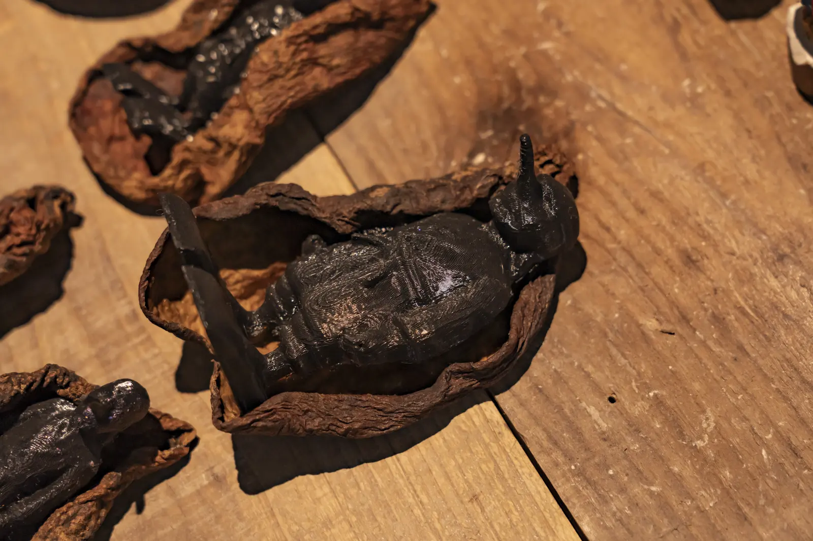
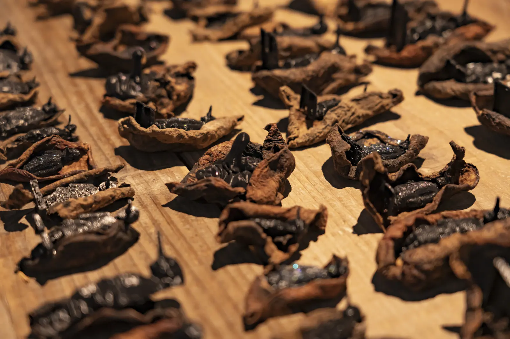

アケビ天狗
アケビの蔓や実の硬さ、ねじれ、空洞を手掛かりに、天狗面のような姿へ組んだ小立体です。素材がすでに持つ形から造形を始めました。

- Year
- 2024年
- Place
- 小院瀬見
- Materials / Method
- アケビの蔓、自然物
What I tried
自然物を均一な材料へ加工せず、裂け、曲がり、焦げたような色を顔の輪郭として読み替えています。複数の個体を並べることで、同じ型を反復するのではなく、採取物ごとの差からそれぞれの表情が立ち上がる構成にしました。

